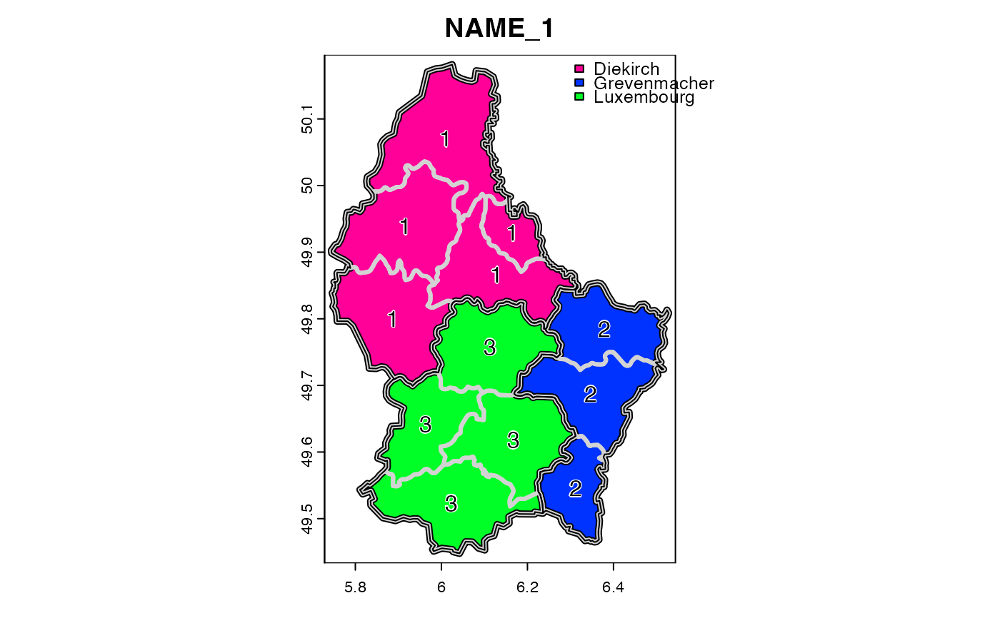

Aggregate raster or vector data
aggregate.RdAggregate a SpatRaster to create a new SpatRaster with a lower resolution (larger cells). Aggregation groups rectangular areas to create larger cells. The value for the resulting cells is computed with a user-specified function.
You can also aggregate ("dissolve") a SpatVector. This either combines all geometries into one geometry, or it combines the geometries that have the same value for the variable(s) specified with argument by.
Usage
# S4 method for class 'SpatRaster'
aggregate(x, fact=2, fun="mean", ..., cores=1, filename="", overwrite=FALSE, wopt=list())
# S4 method for class 'SpatVector'
aggregate(x, by=NULL, dissolve=TRUE, fun="mean", count=TRUE, ...)Arguments
- x
SpatRaster
- fact
positive integer. Aggregation factor expressed as number of cells in each direction (horizontally and vertically). Or two integers (horizontal and vertical aggregation factor) or three integers (when also aggregating over layers)
- fun
function used to aggregate values. Either an actual function, or for the following, their name: "mean", "max", "min", "median", "sum", "modal", "any", "all", "prod", "which.min", "which.max", "table", "sd" (sample standard deviation) and "std" (population standard deviation)
- ...
additional arguments passed to
fun, such asna.rm=TRUE- cores
positive integer. If
cores > 1, a 'parallel' package cluster with that many cores is created. Ignored for C++ level implemented functions that are listed underfun- filename
character. Output filename
- overwrite
logical. If
TRUE,filenameis overwritten- wopt
list with named options for writing files as in
writeRaster- by
character. The variable(s) used to group the geometries
- dissolve
logical. Should borders between aggregated geometries be dissolved?
- count
logical. If
TRUEandbyis notNULL, a variable "agg_n" is included that shows the number of input geometries for each output geometry
Details
Aggregation starts at the upper-left end of a SpatRaster. If a division of the number of columns or rows with factor does not return an integer, the extent of the resulting SpatRaster will be somewhat larger then that of the original SpatRaster. For example, if an input SpatRaster has 100 columns, and fact=12, the output SpatRaster will have 9 columns and the maximum x coordinate of the output SpatRaster is also adjusted.
The function fun should take multiple numbers, and return one or more numeric values. If multiple numbers are returned, the length of the returned vector should always be the same, also, for example, when the input is only NA values. For that reason, range works, but unique will fail in most cases.
Examples
r <- rast()
# aggregated SpatRaster, no values
ra <- aggregate(r, fact=10)
values(r) <- runif(ncell(r))
# aggregated raster, max of the values
ra <- aggregate(r, fact=10, fun=max)
# multiple layers
s <- c(r, r*2)
x <- aggregate(s, 20)
## SpatVector
f <- system.file("ex/lux.shp", package="terra")
v <- vect(f)
va <- aggregate(v, "ID_1")
plot(va, "NAME_1", lwd=5, plg=list(x="topright"), mar=rep(2,4))
lines(v, lwd=3, col="light gray")
lines(va)
text(v, "ID_1", halo=TRUE)
